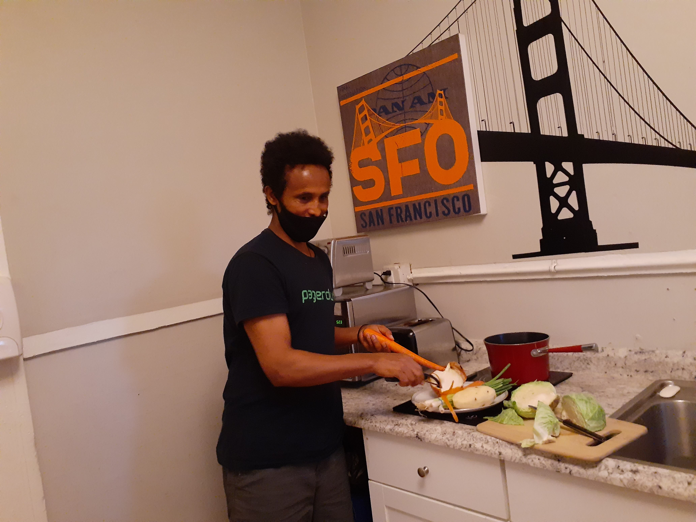
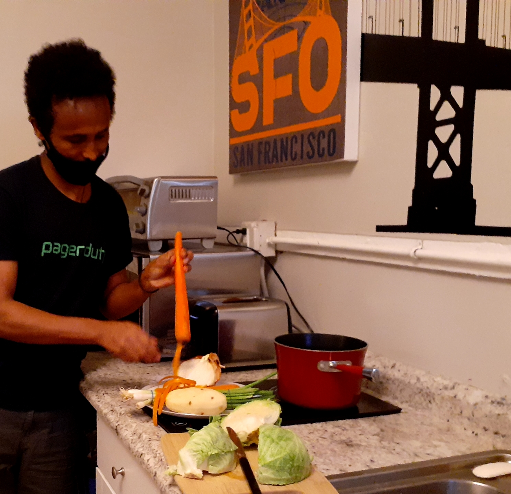

Credit: Bruno Joseph, Ingo Joseph and Daniel Frese.
Credit: Bruno Joseph, Ingo Joseph and Daniel Frese. I enjoy cooking because it keeps me happy in my life. Especially, I love cooking Habesha [Eritrean and Ethiopian] food. At first, I used to help my mom in her cooking. Through time, I found that I really enjoy cooking and my mom encouraged me to learn more. She taught me to step by step on how to cook vegetables. When I grew older, my knowledge of cooking also grew. My mom was the sole reason why I got better since she explained to me how to use temperature control.
I remember that the first dish I made on my own without any kind of assistance was cabbage mixed with potatoes which are called alicha. I enjoyed it very much when it was backed in an oven. That day was really inspiring for me, everybody praised my dish and then I never looked back and never give up. That is why during my college years, I was enjoying cooking and I did not spend money in restaurant. I was keeping cooking and feeling healthy throughout the years.
My favorite thing to cook is shro which is a popular Habesha food and easy to learn it. People should learn from YouTube so many cooking techniques that I know now. If you interesting to cook Habesha food such as shro, zigni, adess, alicha and slsi, watch YouTube videos regularly which helps you to gain enough knowledge of different types of cooking like me. There are many free resourse to learn how cook Habesh food. You can learn Eritrean and Ethiopian food easly from website or YouTube
 